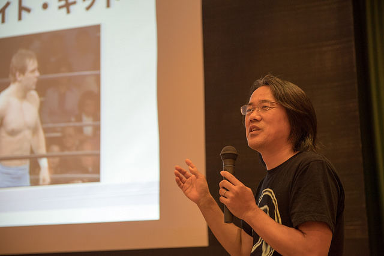
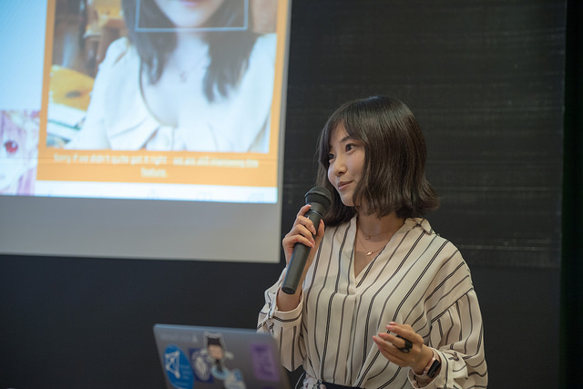
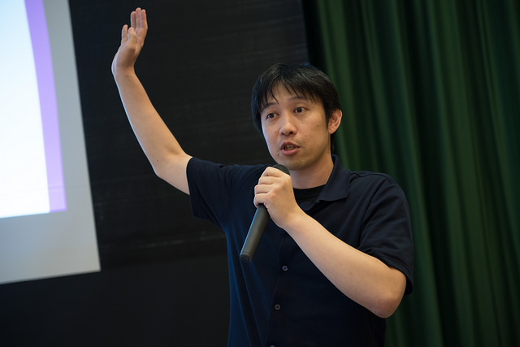
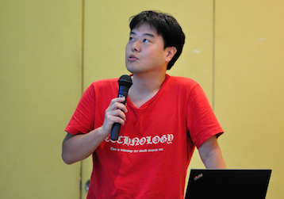

RegionalRubyKaigi レポート (65) とちぎ Ruby 会議 07
とちぎRuby会議07 レポート
書いた人
gdgdiler@toRuby
はじめに
- 日時
- 2017/08/26(土) 11:00 ～ 20:00
- 会場
- 那須野が原ハーモニーホール
- 主催
- とちぎRubyの会(toRuby)
- 後援
- 日本Rubyの会
- 参加者
- 約50名
口上
元気ですかーーッ？！元気があれば何でもできる！
去る8.26、那須野が原ハーモニーホールにおいてとちぎRuby会議07が開催されました。那須野が原ハーモニーホールは大田原市にありますが、大田原市と旧西那須野町(現那須塩原市)が全国初の自治体共同文化会館として建てられた、由来も外観も非常に美しい会場であります(Wikipedia)。
前座
AM11:00開場ということで、希望者にはからあげ専門店マルトクのからあげ弁当が会場で販売されました。これが田舎の弁当らしく、味は悪くないが量で攻めるタイプの弁当。年齢層高めな人が多い会場は早くもグロッギーか？！
そんな会場の雰囲気を一掃しようと登場したのが前座の@track8！当日の登壇者を80年代のプロレスラーに喩えて紹介するという荒技！胃もたれした聴衆も一気にヒートアップ！その仕事っぷりは80年代に前座で会場を沸かした永源遙を彷彿とさせるものでありました。 
まだ前座は続きます。torubyの重鎮、@m_sekiの登場です！重鎮自ら前座を買って出る姿は、還暦を迎えてなおもリングに上がり続けたジャイアント馬場を彷彿とさせます。そして、その@m_sekiのネタはなんと(リアルな)カードゲーム「ショッピングモール」！しかも、会場でそのカードゲームを購入できるというダイレクトマーケティングっぷり！今や定番ムーヴとなった旅費ネタをぶっ込むのも忘れません！

一般講演

さて、休憩をはさんでここから一般講演です。まずは@emorimaさんの「”mission critical”なシステムでも使えるThreadの作り方」の話です。防災情報をリアルタイムで処理するために100個のプロセスで各々100個のスレッドを回すという野心的なシステムだそうで、開発当初はruby 1.8系だったとのこと。1.8系というとまだグリーンスレッドの時代。さすがにそれを聞いて@artonさんから「そりゃムチャだ！」とのツッコミが。YARVが導入されてからRubyのスレッド周りは大きく改善されたものの、今でもジャイアントインタプリタロックの話題が出るなど、Rubyにとってスレッドは鬼門の１つ。ご苦労が忍ばれます。

続いて@artonさん。実際に仕事であった厄介事をRubyで簡単に解決できたよという話。Rubyのスクリプト言語としての側面に改めてスポットを当てました。AIだなんだと世間は騒ぎますが、身近な厄介事はなくならないし、そんなときにはやっぱりスクリプト言語が頼りになります。
そうそう、@artonさんといえばオペラがお好きで。それで失礼ながら「オペラってストーリー(結末)は知ってて見るものですよね？どこらへんが面白いんですか？」って尋ねたんですよ。そうしたら@artonさんは「プログラムと同じよ。仕様が一緒でも実装は人によって違うじゃん？その違いを楽しむんだよ！」といったことをおっしゃってました。

@artonさんのあとを受けて@gotokenさん。もやもやした話。そのタイトルのとおり、つかみどころのない話でしたけど「それ、わかるぅ～！」な内容。結局のところ「なぜRubyを使うのか？」ということになるんですけど、「pがいい」とか「ブロックがいい」とか、理由を１つ１つあげていくこともできるんですけど、やっぱり全体的なもやもやとした部分でRubyが好きということなんでしょうね。それは言語だけでなく、コミッタやユーザといった社会的な側面も含めて。
@gotokenさんともお話させていただいたんですけど、「Windows 10いいよ～。仮想環境いらないって素晴らしい！」とおっしゃってました。例によってこういう夏フェスなんかではマカーが多いわけで、貴重なご意見ありがとうございました。それと、お仕事の関係で文字エンコーディングを扱うことも多いらしく、「Rubyの多言語化がんばった人たち、エライ！」と熱弁されてました。

続いて@ardbeg1958さん。@ardbeg1958さんには何度もとちぎRuby会議で講演していただいています。今回は形式仕様記述について。スケジュールの都合上、さすがに時間が少なく、サワリ程度の話で終わってしまいました。これを機会に形式仕様記述についてみなさんが興味を持っていただければと願います。
講演後、@ardbeg1958さんに前から抱いていた疑問を聞いてもらいました。「オブジェクト指向と形式仕様記述ってどういうつながりなんですか？」いただたお答えは「Eiffelの契約プログラミングが形式仕様記述のはじまりなんですよ」。なるほど！Eiffelといえば@ardbeg1958さんが翻訳された名著「オブジェクト指向入門」がありました。やっぱり人の仕事ってつながりがあるものなんですね。
答えがいただけたので調子に乗って「形式仕様記述ってたまに聞きますけど、あんまり流行ってませんよね？」とぶしつけにお尋ねしたんですね。そしたら怒られることもなく穏やかに「Felicaの開発でVDM++が採用されて劇的な効果があったりと実証例はあるのですが、上層部が導入しようとしても現場側で拒否されることが多いようです」とのこと。このあたりはかなり前のオブジェクト指向に似た状況だと感じました。
ついでといっては失礼ですが、もう１つ疑問があって、「AIって関数型言語と相性がいいように思えるんですけど、関数型言語でAIってあんまり聞かないのはなぜなんでしょうか？」それに対しては「Pythonが関数型言語的に代用されているのではないか」とのことでした。なるほどぉ。命令型言語が関数型言語のエッセンスを取り入れるというのは、Rubyをはじめ、よくあることですけど、そういう動きが関数型言語のシェアを食っている面があるんでしょうかね。
招待講演
@chomado + @okazuki

ここから招待講演。@chomadoさんから。まずは自己紹介を兼ねてはしれ！コード学園の紹介。いつもはC#の人たちをお相手されることが多いようで、Rubyの、しかも年齢層高めな人たちが聴衆ということで、ちょっと緊張気味でしたか。続いて紹介されたのが「松屋警察」。松屋を愛する@chomadoさんが牛めしを判定するために作り出したスマホアプリ。その実装にはMicrosoftのCustom Vision ServiceとXamarinが使われています。デモは、Mac上のVisual Studioで行われて、接続されたiPhoneの画面もリアルタイムに取り込まれていました。写真判定もバッチリ成功！ 
で、@chomadoさん、さすがにRubyの話が出ないまま終わってはマズいと思ったのか(toruby的には全然OKなんですけど)、助っ人にバトンタッチとなりました。@okazukiさん、Xamarinガチ勢。@chomadoさんからの急な依頼であったにもかかわらず、サラサラッと書いたRubyで、Custom Vision Serviceにアクセスして、デモもバッチリ成功！オマケにMicrosoftのイメージアップにも成功！
RubyからCustom Vision Serviceにつないだデモは、非常に「スクリプト言語らしい」と感じました。RubyはAIに出遅れている観がありますが、こうやってRESTで叩けるAIエンジンがあれば、Rubyのようなスクリプト言語でもイケるわけです。そして、AIといえども、いや、AIは競争が激しい分、コモディティ化は避けられなくて、ますますスクリプト言語の需要は高まり、それをPythonだけで補うわけにもいかないと思うのです。
余談なんですけど、あとで「なぜ@chomadoさんを呼ぼうと思ったの？」って聞いたら、@miwa719さんが「@chomadoさんのデブサミでのお話が素晴らしかったの！」といってました。
@shugomaeda

招待講演2人目は@shugomaedaさん。ピュアRubyで書かれたテキストエディタ、texbringerの話。cursesライブラリを使った端末上で動作するEmacsライクなテキストエディタです。cursesライブラリというのはUnix由来の端末制御ライブラリです。@shugomaedaさんは、そのライブラリをRubyから利用するcurses gemの開発者でもあります。curses gemはもともとは標準添付ライブラリで歴史も古いのですが、そもそも@shugomaedaさんがcursesライブラリに手を出したのは「いつかテキストエディタを作りたい」と思ったからでした。それが20年前の話。その夢がようやく叶ったわけです。
エディタの名前の由来の中二的な話や、細かい技術的な話もされていたのですが、個人的に「おっ！」と思ったのは「The Craft of Text Editing」の情報でした。この本、テキストエディタの製作者にはバイブルみたいなものとして有名だったのですが、日本語訳は絶版になったものの、原書はネットで公開されているそうです。
@mametter

招待講演3人目は@mametterさん。「Rubyでつくる型付Ruby」の話。Ruby 3.0では静的型が導入される可能性があり、どのような実装になるかという話でした。今回紹介されたのは漸進的型付けで、これなら既存のコードを壊さなくて済むのでいいとのことでした。
ところで、静的型には「ドキュメンテーション」と「静的型チェック」の２つの役割が紹介されていましたが、個人的には「最適化」が本命ではないかと思っています。意外にもRubyにはスピード狂がたくさんいるということがわかりましたから。そういう@mametterさんご自身もファミコンのエミュレータでベンチマークというスピード狂を煽る作品を公開されています。
勉強会
講演だけで終わらないのがとちぎRuby会議。全員参加の勉強会の時間です。テキストは@mametterさんの「RubyでつくるRuby」。この本の特徴は、プログラミング言語処理系の作成では面倒で挫折しやすい字句解析の部分をできるだけ省いて、構文木の評価から話を本格的に進めている点です。
当日の勉強会では、その構文木の基礎となる木構造を理解する第3章を読みました。@mametterさんが本を読み上げて、そのあとみんなでサンプルコードを写経するというスタイルです。木構造ということで再帰が避けられませんが、@mametterさん曰く「再帰を理解するならフィボナッチより木構造のほうがいいです」とのこと。
パーティーとLT
勉強会が終わったあとは、会場内に用意されたビュッフェでパーティー。料理は大田原のリトルアンジェリカさんに用意してもらいました。
みんなで料理をいただきながらLTがはじまりました。LTへの参加は自由で、ボードに名前を書くだけ！しかも何回でもしゃべれる！さらにLTの参加賞として、各社からご提供いただいた書籍やノベルティグッズがもらえる！まさにしゃべらにゃ損損なLT大会。
今回書籍やノベルティをご提供いただいた各出版社の方々に感謝いたします。以下、@m_sekiさんのブログからです(M-x sort-lines順)。
- とちぎRuby会議07書籍プレゼント紹介オライリー編
- とちぎRuby会議07書籍プレゼント紹介オーム社編
- とちぎRuby会議07書籍プレゼント紹介技術評論社編
- とちぎRuby会議07書籍プレゼント紹介日経BP編
- とちぎRuby会議07書籍プレゼント紹介翔泳社編
LT、思い出せるだけ書いておきます。
@m_sekiさんのchibi:bitを使ったイニDなりきりマシーン。商品化のご相談は@m_sekiまで。
@shugomaedaさんの「Rubyはオートバイだ！」という話。これは個人的に感銘を受けました。@shugomaedaさんといえば、最近、KLX125からDuke250に乗り換えたそうです。「なぜオートバイのような不便な乗り物に乗るのか？」という問いは「なぜRubyのような不便な(あるいは不完全な)言語を使うのか？」という問いと同じだと。う～ん、R432、いつか走ってみたい。
@emorimaさんの千鳥足.rbの話。まぁ、Rubyには酒好きが多い。コミッターにも酒好きがいるし、酒好きの集まる地方Ruby会議もある。広島のRubyKaigiでも、Drink Upが開催されるそうですが、すでに予約が埋まっているとか。@emorimaさんも、パーティーの終わりころ、余った一升瓶をどうするかで悩んでおられました。ちなみにダイナマイトキッドという強いカクテルがあるそうです。
@ledsunさんの咳マニアの話。忍者テストに続きマルコフ連鎖によるテストシナリオの生成にチャレンジ！
@youchanさんのgibierの話。LT最多登壇。4回。
@nay3の怒らない話。@koichiroさんとお嬢さんにはカメラマンを勤めていただきました。
@you_sskさんのOneDrive.exeの謎トラブルが解決して、それがコミュニティ内で広まっていった様子の話、面白かったです。
@awazekiさんの普通の暗黒Rubyの話。
@tsuboiさんからいただいた本、大変興味深かったです。
他、登壇いただいた方々で思い出せなかった人もいます。申し訳ありません。
LTの最後は@awazekiさんだったんですが、そのあとに@zzak_jpさんも座って待ってたんですよ。でも、みんなLTに夢中になってか、お昼のからあげ弁当が後を引いてるのか、料理が一向に減らない。泣く泣くLTを打ち切って料理を食べるのに集中してもらうことになりました。@zzak_jpさんにはまたの機会にお願いします！
おわりに
今、Rubyは元気なのか？元気でないのか？そんなもやもやを抱えつつ参加したとちぎRuby会議でしたが、やっぱりRubyは元気でした。身近に厄介事があれば、まず選ばれるのはスクリプト言語です。Rubyはスクリプト言語の中でも文字エンコーディングに強く、RESTのサービスだったらすぐに使えて、スレッドも扱えます。すでに20年を超える歴史があり、その中で蓄積された資産と知恵があり、未来に向けての動きも続いています。
栃木はここのところずっと雨続きでしたが、8.26は天候に恵まれました。ハーモニーホールを後にするとき、遠くに花火の音が聞こえました。それは夏の終わりを知らせる、ちょっぴり寂しさを感じさせるものでした。
講演してくださった方々、お出でいただいた方々、ご協力いただいた方々、そしてスタッフの方々、ありがとうごいました。またとちぎでお会いしましょう！
いくぞーー！イーチ！ニーイ！サーン！ダーーッ！